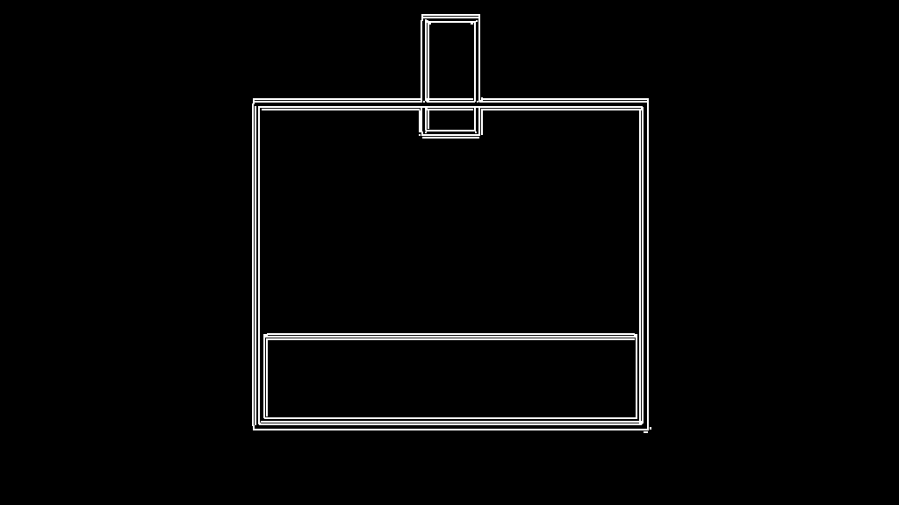

已评审的 A→B 四帧：真实玻璃底图冻结，程序只改变液体内部状态。

Route A 选中的真实玻璃与光照供体。

反例：逐帧自由生成会移动器材、背景和液体颜色。

反例控制：整张程序截图的密集边缘会把界面细节错误地当成场景几何。
Stage 3 · CHEM-01
透明玻璃、克制的实验室光照；局部指示剂颜色必须仍由程序 pH 场决定。
这里的图只回答“应该看起来像什么”。物体在哪、数量多少、边界和状态怎样变化，全部由程序合同与控制图决定；不能从这些参考图偷几何。
